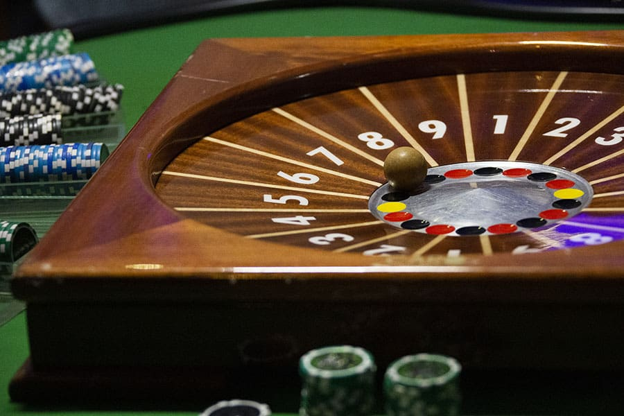

BOULE 2000
La Boule
Un jeu de hasard rapide et accessible. Le principe consiste à miser sur les numéros ou les différentes possibilités de gain avant le lancement de la boule.
- 1 table
- La mise est placée avant le lancement
- Le résultat détermine les mises gagnantes
- Les gains dépendent du type de mise choisi
HorairesDimanche → Jeudi : 20h → 2hVendredi → Samedi : 21h → 3h


BLACKJACK
Le Blackjack
Le Blackjack oppose les joueurs à la banque. L'objectif est d'obtenir une main dont la valeur est la plus proche possible de 21 sans dépasser cette valeur.
- Hit — demander une carte
- Stand — rester sur sa main
- Double — doubler sa mise
- Split — séparer une paire
- Les figures valent 10 ; l'As vaut 1 ou 11 selon la situation
HorairesDimanche → Jeudi : 20h → 2hVendredi → Samedi : 21h → 3h